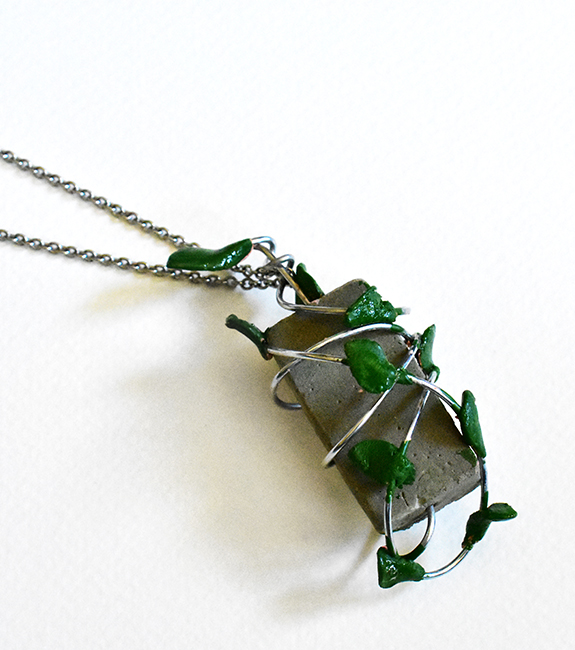
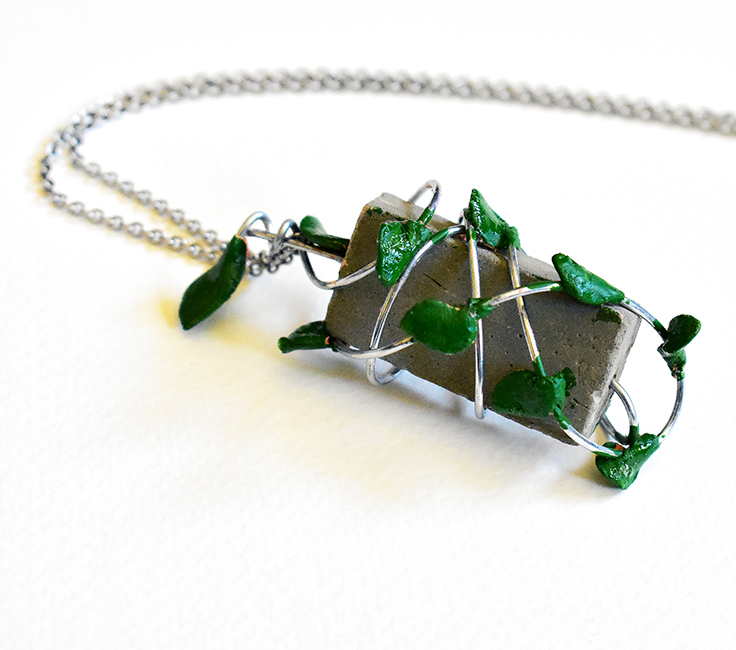

The subject of competition was 'Roots & Wings'. This subject evoked the human's toughts.
people can free themselves to fly from beliefs and toughts which have a strong root in scoiety so I tried
to illustraite this process from hard and fanatic roots to freedome wings.
▾


the cement represent strong
and fanatic roots Metalic wire
represent the process of change
Leaves shows the sence of freedom
and wings.
Back to timeline